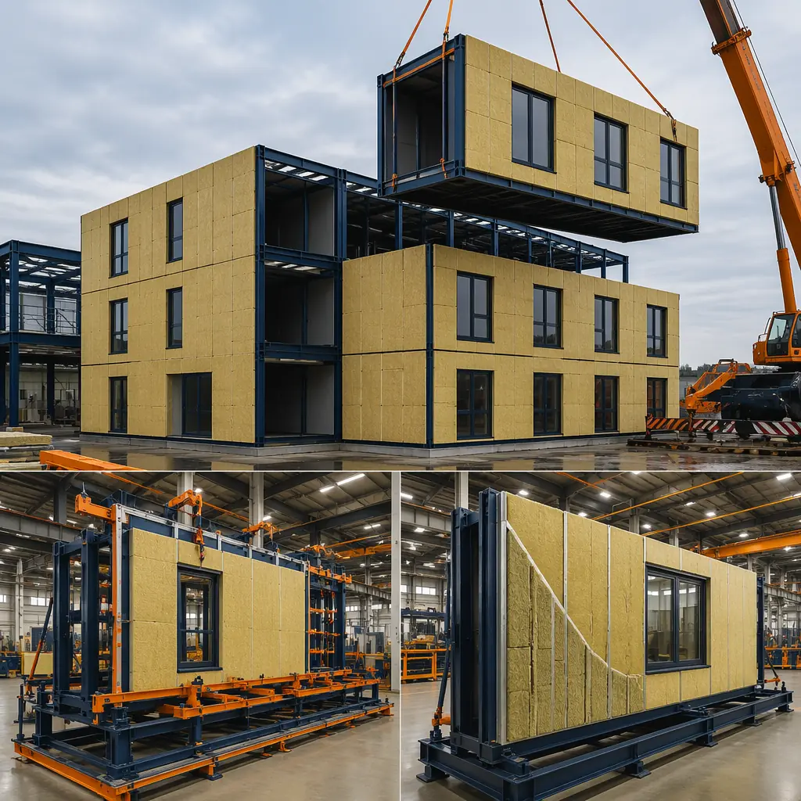
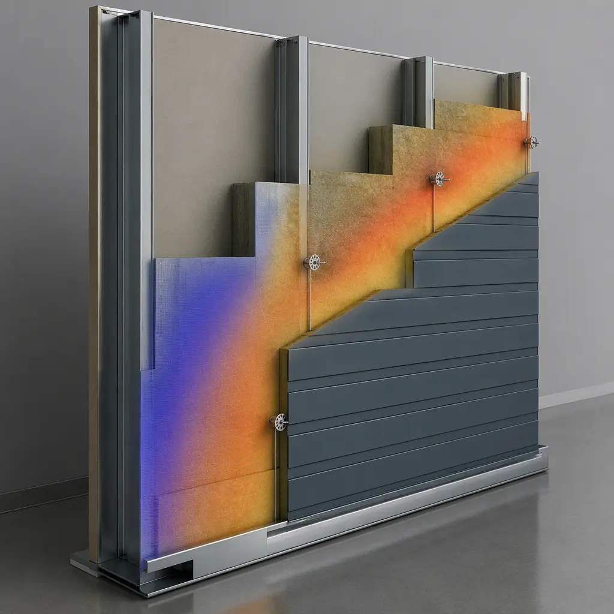
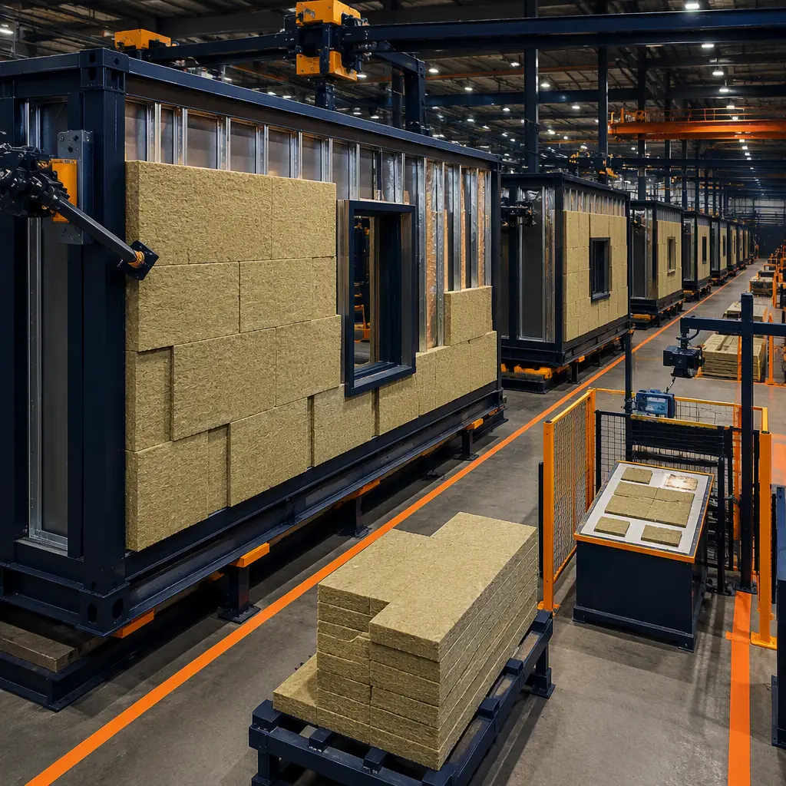

A building's thermal insulation is only as good as its weakest thermal bridge. In site-built steel-frame construction, the steel studs themselves — with a thermal conductivity roughly 1,300 times that of the insulation packed between them — can reduce a wall's effective R-value by 40–65% compared to the nominal cavity insulation value. This is not a marginal inefficiency; it is a structural compromise baked into the conventional building process. Modular construction solves this problem at its root: the wall assembly is built flat on a factory jig, continuous insulation is installed outboard of the steel studs before the wall is ever tilted up, and the entire thermal envelope — insulation, air barrier, weather-resistant barrier, and cladding — is integrated by a single production team in controlled conditions. The result is a building that achieves effective R-values of R-30 to R-40 at wall thicknesses comparable to site-built assemblies delivering half the thermal performance. This article explains the insulation systems, energy code compliance pathways, and thermal bridge elimination strategies that make modular construction the high-performance building industry's best-kept secret.

Why Steel-Frame Walls Need Continuous Insulation
Cold-formed steel studs have a thermal conductivity of approximately 45 W/m·K. Mineral wool insulation — the material that fills the stud cavities — has a thermal conductivity of approximately 0.035 W/m·K. The ratio is roughly 1,300:1. When you place R-21 mineral wool batts between steel studs spaced 16 inches on center, the studs act as parallel thermal conductors that short-circuit the insulation layer. Heat flows through the steel studs 1,300 times more readily than through the surrounding insulation, reducing the wall's effective R-value from the nominal R-21 to somewhere between R-7 and R-13, depending on stud spacing, stud depth, and the presence or absence of any thermal break between the stud flange and the exterior sheathing.
The building codes have recognized this problem for over two decades. ASHRAE 90.1-2019 Table A3.3-3 provides correction factors for steel-framed walls that reduce the nominal cavity R-value by 40–65% depending on stud spacing and depth. The 2021 International Energy Conservation Code (IECC) requires continuous insulation outboard of steel studs in Climate Zones 4 and above for commercial buildings — which covers most of the continental United States. But code requirements are one thing; field compliance is another. Site-built steel-framed walls frequently substitute cavity-only insulation during value-engineering exercises, and even when continuous insulation is specified, it is often installed by a different trade than the wall framing, creating gaps in the thermal barrier at floor lines, window openings, and fastener penetrations that the energy model does not capture.
Modular construction eliminates the compliance gap. The wall assembly is designed from the start with continuous insulation as an integrated layer — not an optional upgrade. For a complete breakdown of how the wall, roof, and weatherproofing layers work together in a modular assembly, see our guide on modular building envelope systems.

Continuous Insulation Strategies: Mineral Wool, Polyiso, and Hybrid Assemblies
Modular wall assemblies employ three primary continuous insulation materials, each selected based on the project's climate zone, fire rating requirements, and budget targets. The CI layer is installed outboard of the exterior sheathing, creating an uninterrupted thermal blanket that covers the steel studs, rim joists, floor lines, and other structural elements that would otherwise act as thermal bridges.
- Mineral wool CI (R-4.3 per inch). The most common CI material in modular construction. Mineral wool is non-combustible (melting point above 1,000°C), vapor-permeable (approximately 30 perms per inch), dimensionally stable, and water-repellent. These properties make it ideal for factory installation: it does not require protective covering during module transport, it does not off-gas or degrade, and its vapor permeability allows the wall assembly to dry to the exterior — a critical property for buildings in mixed-humid climates where air conditioning creates a vapor drive from exterior to interior during summer months. A 2.5-inch layer of mineral wool CI provides R-10.8 of continuous insulation, sufficient to bring a 2×6 steel-framed wall with R-21 cavity insulation to an effective R-30 at standard stud spacing.
- Polyisocyanurate CI (R-5.7 to R-6.5 per inch). Polyiso provides the highest R-value per inch of any commonly available rigid insulation, making it the material of choice for cold climates where wall thickness is constrained. A 2-inch layer of polyiso CI delivers R-11.4 to R-13.0 of continuous insulation. Polyiso is faced with foil facers that serve as a vapor retarder and radiant barrier, which must be accounted for in the wall assembly's hygrothermal analysis. In factory production, polyiso boards are cut to precise module dimensions on a CNC saw, with staggered joints between layers to eliminate through-gaps in the insulation plane.
- Hybrid CI assemblies. For projects in extreme climates (IECC Climate Zones 7–8, subarctic regions), modular manufacturers combine mineral wool and polyiso in a two-layer CI system: a vapor-permeable mineral wool layer against the sheathing for drying potential, topped with a high-R polyiso layer for maximum thermal resistance. The total CI thickness may reach 5–6 inches, delivering R-25 to R-30 of continuous insulation — enough to achieve Passive House performance levels in a wall assembly that is still thinner than a site-built double-stud wall.
For the energy cost implications of these insulation strategies, see our article on modular building energy efficiency, which documents 30–50% operating cost reductions relative to conventional construction.
IECC and ASHRAE 90.1 Compliance Pathways for Modular Buildings
Modular buildings must demonstrate energy code compliance through one of three pathways defined in ASHRAE 90.1 and adopted by the IECC. The modular factory environment makes the most rigorous compliance pathway — whole-building energy modeling — not only achievable but cost-effective, because the factory production data provides inputs that would be estimated or assumed in a site-built project.
| Compliance Pathway | Description | Modular Advantage |
|---|---|---|
| Prescriptive | Meet minimum R-values for each building component per climate zone table | Factory-installed CI exceeds prescriptive minimums by 30–60% with no cost premium |
| Trade-Off | Underperform in one area, overperform in another; modeled total energy ≤ prescriptive baseline | Factory air barrier testing provides documented 0.10–0.20 ACH50, enabling envelope trade-offs |
| Performance (Energy Modeling) | Whole-building energy model demonstrates total energy cost ≤ baseline building | Factory data: actual R-values, tested air leakage, verified window U-factors — not assumptions |
Most modular buildings submitted for permitting use the performance pathway because the factory production data provides precise inputs for the energy model. When a project's actual air leakage rate is 0.15 ACH50 rather than the 0.40 ACH50 assumed for conventionally constructed buildings, the energy model can credit the difference as reduced heating and cooling loads — which often allows the mechanical engineer to downsize HVAC equipment by 15–25%, offsetting the modest incremental cost of continuous insulation. For a complete analysis of the financial return, see our article on modular construction ROI.

Thermal Bridge Elimination: Six Details That Matter
Continuous insulation alone does not guarantee a thermally efficient building. The CI layer is only as continuous as its weakest penetration — and every building has dozens of penetrations that, if not detailed correctly, become thermal bridges that degrade the assembly's effective R-value. Modular construction addresses six critical thermal bridge details in the factory, where access is unrestricted and the installer can work at ground level:
- Balcony and canopy connections. Structural steel elements that penetrate the thermal envelope — balcony support beams, canopy frames, exterior stair connections — are thermally broken at the module frame using proprietary thermal break pads or fiber-reinforced polymer (FRP) connectors that reduce the connection's thermal conductivity by a factor of 100–200 compared to a continuous steel connection. In site-built construction, these thermal breaks are frequently omitted because they are not visible and not enforced by the building inspector focused on structural safety, not thermal performance.
- Window and door perimeter framing. The rough opening for a window or door is a four-sided thermal bridge where the steel header, sill, and jambs bypass the cavity insulation. Modular manufacturers install CI returns at the rough opening perimeter — rigid insulation strips that wrap the steel framing from the exterior CI plane to the interior face of the stud, creating an unbroken thermal barrier around the entire opening. The window unit itself is installed from the exterior, with the mounting flange integrated into the CI layer and the WRB, producing a window-to-wall interface that is simultaneously structural, thermal, and weatherproof.
- Floor line and rim joist. In multi-story modular buildings, the floor-to-floor connection is a horizontal thermal bridge where the structural steel of the upper module's floor frame meets the lower module's ceiling frame. Modular manufacturers install a continuous strip of high-compressive-strength insulation — typically extruded polystyrene (XPS) or high-density mineral wool — between the module frames at each floor line, ensuring that the CI layer is continuous across the building's height.
- Fastener thermal breaks. The fasteners that attach cladding through the CI layer into the steel studs are themselves thermal bridges — steel screws that penetrate the insulation and connect the exterior cold surface to the interior conditioned stud. Modular manufacturers use thermally broken fasteners (stainless steel screws with a nylon sleeve at the shank) or, for heavier cladding systems, proprietary clip-and-rail systems where the cladding rail is attached through the CI with intermittent clips that minimize the total cross-sectional area of the thermal bridge.
- Roof-to-wall transition. The intersection of the roof insulation and the wall CI is a linear thermal bridge that runs the entire perimeter of the building. In modular construction, the roof assembly's continuous insulation is installed to overlap the wall CI at the parapet or eave, creating a continuous thermal blanket that wraps from the wall plane up and over the building. The overlap is factory-installed on each module and verified for continuity before the module leaves the production line.
- Foundation-to-wall transition. The connection between the module's floor frame and the site-built foundation is the only thermal bridge that must be addressed in the field. Modular manufacturers provide a continuous sill seal gasket — a closed-cell foam strip with an R-value of R-3 to R-5 — that is factory-adhered to the underside of the module's floor frame. When the module is set on the foundation, the sill seal compresses, creating a thermal break between the conditioned module and the concrete foundation or steel pier system. For more on foundation design, see modular building foundation systems.
Air Barrier: The Companion to Thermal Insulation
Insulation resists conductive heat transfer. An air barrier resists convective heat transfer — the movement of conditioned air through gaps, cracks, and holes in the building enclosure. A building with R-30 walls and a leaky air barrier will underperform a building with R-20 walls and a tight air barrier, because convective heat transfer through air leakage can account for 30–40% of a building's total heating and cooling load. The two systems — insulation and air barrier — must work together, and modular construction integrates them in a way that site-built construction cannot replicate.
In modular construction, the air barrier is factory-installed as part of the wall assembly. The exterior sheathing joints are taped or fluid-sealed, the window and door flashings are integrated with the sheathing, and the module's interior drywall is installed with continuous gaskets at all perimeter joints. Each module is tested for air leakage before it leaves the factory, typically using a modified blower door test that pressurizes the module and measures the airflow required to maintain a 50-pascal pressure differential. The test data is recorded and becomes part of the project's commissioning documentation — a level of quality assurance that is simply not available for site-built air barrier assemblies, which are tested only at the whole-building level after construction is complete, if they are tested at all.
Typical modular building blower door results range from 0.10 to 0.20 ACH50 — well below the 0.40 ACH50 maximum in the 2021 IECC and approaching Passive House levels (0.06 ACH50 for certification). For a 50,000-square-foot building, the difference between 0.15 ACH50 (modular) and 0.50 ACH50 (typical site-built) represents approximately 12,000–18,000 cubic feet per minute of uncontrolled air exchange under design wind conditions — air that must be heated or cooled by the HVAC system, at an energy cost of $15,000–$25,000 per year in most U.S. climate zones. For a deeper look at how these airtight assemblies contribute to whole-building sustainability, see our article on modular net-zero energy buildings.